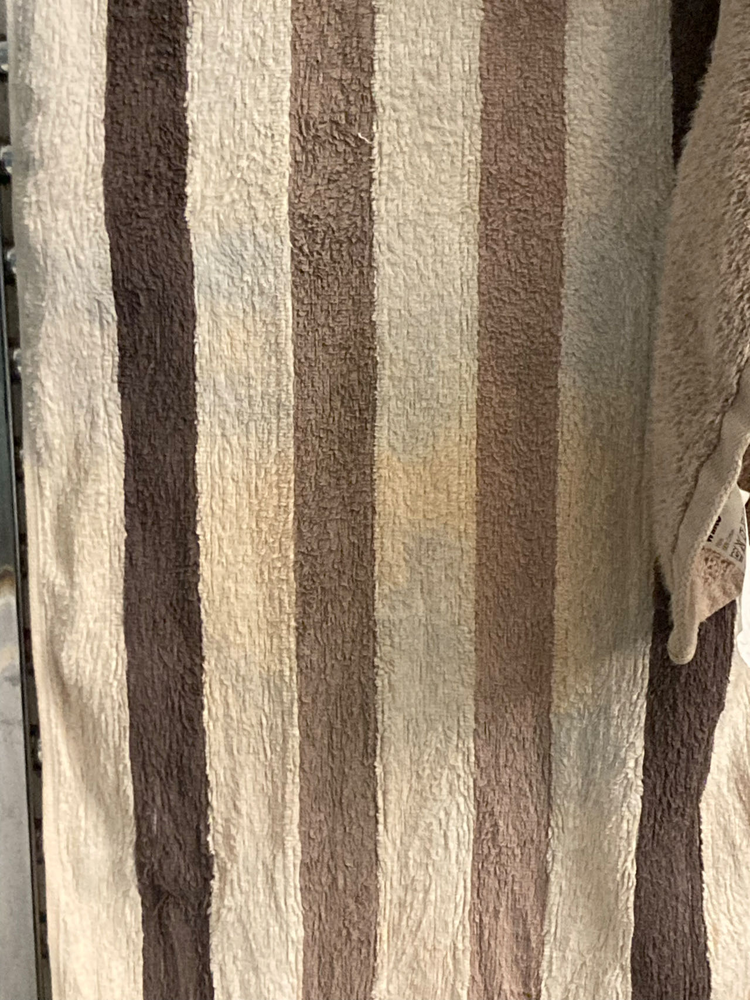

Translation, Experience, and Some Thoughts
https://music.douban.com/review/16174004/
Working Days (2024.6.24)
Cantonese
Bilingual
Trilingual
双 Bi
三 Tri
work in finance
financial
Mandarin
Portuguese
Develop skills
development
Influence
Information
The pronunciation of "With"
Nouns after "The"
Working Days (2024.6.17)
Sitting at my desk
With nothing to do
I think I won’t have anything to do today
I’ll just sit here
112-Step Poem
From the thought of writing this poem
To finishing it
I took
112 steps
Now You Solved Gödel's Incompleteness Theorem
Red is sometimes green, and green is sometimes red. The printer is sometimes the paper, and the paper is sometimes the printer. The table is sometimes the floor, the floor is sometimes the table. The chopsticks are sometimes me, and I am sometimes the chopsticks. The pot is sometimes the plant, and the plant is sometimes the pot. The light is sometimes the source, the source is sometimes the light. You looking at me is sometimes me looking at you, and me looking at you is sometimes you looking at me. The sky is sometimes the ground, and the ground is sometimes the sky. I am sometimes nothing, and nothingness is sometimes me. The music is sometimes your ears, and your ears are sometimes someone else's music. What I see is sometimes what you see, and what you see is sometimes what someone else sees. The last one to see something may just be that thing, and that thing may eventually be me. I am never not something, and that something is never not this thing. I am this. I am here. This thing, in the past, present, and future, is just this thing.
About the Exhibition 'Room' Q&A
Q: You exhibited a room, but it's inaccessible. Doesn't this exhibition feel like nothing?
A: If something cannot be entered, it doesn’t mean it doesn’t exist.
Q: How do you prove this room exists?
A: I cannot prove it.
Q: So is the outside of the room part of the exhibition, like the wall we see now?
A: No.
Q: Where is the boundary between the inside and the outside of the room? How many millimeters or micrometers does the outer wall extend inward?
A: Everything you can’t see is inside the room.
Q: What is inside the room?
A: I don’t know.
Q: What if I open the door and go in?
A: The room cannot be entered from the outside.
Q: What does that mean?
A: It means exactly that — the room cannot be entered from the outside.
Q: Can it be entered from the inside?
A: If you can.
Oat Milk
There’s a bottle of oat milk to my right
I haven’t drunk it yet
Untitled (III)
Every word spoken is a poem. After every awakening, you still should do what you need to do. When you close your eyes, you can’t see the table lamp. Where you can’t see, there may be someone doing exactly the same thing as I am. Sometimes you can buy time from God. Water, you are so watery. No bird has ever been able to create language. In some world, stepping on the cold floor means the floor is cold. Don’t confuse the difference between a proposition and the meaning of a proposition. Life is fractal. Buddha said, one flower, one world.
To understand the relationship between now and eternity, some Greeks worked hard. My dad plays Match 3 after work every day. This is his answer, not much different from the Greeks. Some sounds can only be heard in silence. I’ve already said this. In the disturbance of ego, I can’t find the next moment. My dad has never told me anything about life. That's how I remember it.
Ego is ego. E is E, go is go. While wallowing in memories, an alien gives me the middle finger. Some words are left unfinished. You only know that when you start to continue speaking. When you don’t know what to say, there is no speech. When speaking, you always reach a point where no one speaks. People who don’t speak, no one hears them. When they begin to speak, the mystery dissipates. Mystery is a mysterious word.
For those who think nothing is mysterious, everything is mysterious. Contradiction begets silence. To make sense of it with love is God's mission. When I say this, I mean just this. This. Only when pointing to this and saying "this" can some things unify.
Be careful. Don’t become a slave to sound.
Untitled (II)
Fear is self-contradictory, love is self-consistent. No meaning is greater than another. Of course, greatness itself doesn’t have any meaning. When I typed this line, I didn’t know what the next line would be. But once I typed it, I knew. Actually, you understand me, don’t you? How do you converse with silence? Two mute people speaking at once. I want to tell you the things you want me to tell you. You want to tell me the things I want to tell you. I can’t hear you.
The facial cleanser is beside the soap dish. I have some thoughts that I cannot express. When you listen carefully, what you hear is a sound emerging from a place that you don’t know whether it exists or not.
I see a striped towel. Sometimes sound and meaning don’t connect. But when they do, I see a striped towel. The hook is hanging on the door, like a hook hanging on the door. When you think, you think of non think. Only when there is no think will you begin to think. Like when there is no death, there is no birth. The existence of time creates a shared structure between language and the world. You cannot make love to something that does not exist. This is the theological logic of chastity cages.
An ashtray can hold ashes. Ashes are called ashes because they look like ash. Sometimes, when you're tired, you want to sleep. You cannot be sure in the room that the sound of birds outside is indeed from a bird. The word "made" was typed three times. What emerges from language is a malformed monster. I think language can learn something from itself.
Many little things, when put together, become a big thing, both in time and space. But I can only see part of this truth. At this moment, an airplane flies overhead. Sometimes language creates a new world. You cannot create something that already exists. These two palm trees, standing silently here. Two. I have no opinion about them. Whether they have an opinion about me, I don’t know. Now, the airplane flies over the palm trees. My eyes, trees, and the airplane might align at some point. I can't imagine what it's like beyond here and now, at least not in a truthful way. Complex structures are always the result of imagination. Mathematicians imagine, stopping and starting, stopping and starting. I prefer to imagine rather than choose. And imagining is God's choice, not yours.
You live in your world. You will die in someone else’s world. When you eat, you eat. When you wipe your hands, you wipe your hands. I stop.
Untitled (I)
Don’t go beyond what you can't go beyond. When your mind is fixed in one direction, it is fixed in that direction. The other direction is impossible; this statement is not a true proposition. Directions are born from nothing.
Every sentence is a lie. Wrong. The right things and the wrong things are equally numerous. What is the equals sign? Can you find two identical fingerprints? My hand is never your hand. My looking at me is never mine. To some degree, degree does not exist. And when a word is here, it is not not here. Can an ouroboros be drawn from one stroke? The topology in mathematics does not equal the topology of the world. There is a strong desire, this desire makes me do something. "What" and "how" are two different words. How do you tell two things are different? Meaning and appearance are the same thing. If we say everything is the same thing, will there be another true or false proposition in language? When I press the spacebar, a song starts playing. Then I see several vertical lines. There are infinite correspondences between language and reality, none of which has special meaning. "Language and reality share a common structure" may be a false proposition. In fact, it is one of the propositions in language (and the world) that cannot be falsified. There are countless such propositions. No sentence is wrong. Similarly, no sentence is right. The same goes for musical notes.
We hear sound in time. No sound is worse than another. Good and bad are illusions of time (or any tautologies). Tautologies do not exist in this world, but not necessarily not in another. I'm using things from another world to speak about this world. Similarly, I'm using things from this world to speak about another. In that world, it is possible to make falsifiable judgments about time. I am lying. I let the lies (along with life) continue.
Writers carry an eternal PTSD. Its source remains silent forever. The more silent you are, the more arrogant I become. In places unseen by the eyes, another world appears. When I grasp one possibility, another slips away. The thing before me is not the same thing anymore. In the smallest unit of time, only one word can exist and be known. Of course, one word contains infinite time. No sentence can express that one which cannot be expressed. Or those countless ones. Breathing and clockwork are always somewhat different. This difference is also the difference between consciousness and artificial intelligence. But in reality, they are the same, aren’t they?
Similarly, I do not expect my words to say anything different. This is nonsense. Nonsense is, of course, speech. Just like noise is also sound. Why must you like a specific kind of music? These words are most moral when they do not exist. Even if morality is spoken in language, it does not exist within language. What is the morality of poetry? I am eating. Of course, I am not saying that I am eating right now. Alright, morality is like always knowing that you want to say this sentence, and not another. Sometimes you also don’t know. Whether you know it or not, when this sentence is said, it's already said. All sentences are said. Sometimes, you hear no sentence at all. And here is silence. Silence is a moral imperative, but morality makes you speak. You always need to open your mouth when you eat. Eating without opening your mouth doesn’t count.
Inspiration only comes when it comes. When it doesn’t, it doesn't. Words spoken without inspiration are not false. They are not essentially different from the words spoken with inspiration. Essentially, or non-essentially. You can lie, but you can’t speak a false word. When you speak a lie, you have to use another lie to round it out. This is exactly what I am doing. But now, it’s not. Now, it is and it isn’t. Of course, Laozi said, "The Dao that can be told is not the eternal Dao." Laozi is not I. I neither agree nor disagree. In any case, you are right, you are wrong, I am right, I am wrong. You cannot make a judgment without committing a crime. The living is always rounding it out. Will the dead awaken before time ends? Whose answer do you trust? Who? Who speaks in silence? Only silence. What do you want when you are not silent? I want to be silent. When I am silent, what do I want to do? Ha ha. I want to be silent. Of course, this is a lie, along with all the previous words. What is silence? Is the nothing on the left the same as the nothing on the right? Is the nothing from before the same as the nothing after? No nothing. I am in PTSD. I am living. Don’t go beyond what you can't go beyond.
Pigeon
A pigeon is walking toward me
Its neck has a reddish-purple ring
It waddles like the other pigeons
Now it’s gone
Annoyance
Little mouse
Your head is so small
Little pigeon
Your head is so small
I have big troubles in my big head
Aliens
How big are your heads?
Do you also have these troubles?
Today I Want to Kill Everyone
I want to kill everyone
Everyone
Everyone
Everyone
Die
Truth
True and false
False and true
True true false false
False true true false
Who
Who am I writing poems for?
I don’t know
I don’t need to know (Who said this sentence in advance?)
But if I still want to know
Okay
Now I’ll start imagining a person who doesn’t exist
Maybe not a person
That thing is the one supervising me speaking and acting
Supervise, no, more like observe
Observe, no, more like follow
The more I say, the more terrifying it becomes
Is it __?
I don’t know...
I don’t need to know
Fuck
It’s me, it’s him
We are all the same
When Shitting
When shitting
I see a picture of 28 on the left wall
In the picture, she watches me shit
Well, I’ll keep shitting
Maybe it’s not just her watching me shit
At Five in the Morning, I Peeed
I went out
Peeed
Spat twice
Watched a plane fly across the sky
The sky is really blue
Annoyed
I’ve been a little annoyed lately
My mind is filled with thoughts
I need to jack off every day
To unwind
Jerk
Jerk
Get rid of them all
This
This water is flowing into the bathtub’s drain
My feet are not in the water
I am waiting for the water to finish flowing
After Typing These Words on the iPad, I Have Less Time Left
My left hand is holding my dick
My right hand is holding the iPad
Each time I jack off
The remaining time in my life
Decreases by some seconds
Sitting on the Chair Against the Wall in the Living Room
I feel that creation has no meaning
After writing this sentence
I don’t know what the next sentence is
Typing While Showering
I am in the bathtub
In front of me, there is a toilet
I am typing on the iPad
When I turn my head, I see body wash and shampoo
I am stepping on the showerhead
To prevent water from spraying upwards
And splashing out
Oh
Zoe and I both let out an "Oh"
Then 28 told me to sit
And bring the chair from behind
I’m here now
Jiefang Road Office Building Lobby
An old lady pushes a cart
It is loaded with several garbage bags
I counted
There are four
Not sure
Jiefang Road Office Building Interior
A woman is hunched over
Looking at her phone
Searching for something
She walks towards the hotel front desk
She asks something I can’t hear
The front desk answers something I can’t hear
Two other women walk past her
One is pulling a suitcase
The other is not
The front desk tells the first woman something: “That’s it”
“That’s it”
I Am Here
I am here
It is there
They are there
He is there
They are there
He is there
They are there
First Day of the New Year Lunch
But right now
I just want to eat something randomly
The rice doesn’t have to be hot
In front of me is a plate of stir-fried green beans with sausage
And lettuce
I’ll also eat an
Egg with sauce
Sometimes Empty
My left hand is holding my D
Playing with them
Life is so empty
I am here
Playing with the D
Soft
Up and down
Masturbation
Up
Down
Up
Down
Up
Down
Up
Down
Up
Down
Up
Down
Up
Down
Lights in the Room
There are two lights directly above my head
Three lights in front of me above
One light in the left front above
There are six lights on the ceiling of my room
Honest or Not Honest
To speak honestly
Everything everyone is doing is honest
Even lying is honest
Suicide is honest too
So what is not honest?
For example, the first line of this poem is not honest
Alright, maybe honesty and dishonesty don’t really make a difference
Eleven O'Clock and Six Minutes
Put a shrimp stick in my mouth
Take a bite
With my back teeth
Then scratch my nostrils
Ah
Bowl
While washing the bowl
I suddenly noticed how round this bowl is
This Is When I Started to Feel Sleepy
Facing something important
(Of course, I don’t know what’s important)
We always get sleepy
If you want to sleep
Then sleep peacefully
If what you are facing is the most important thing
Then sleep forever
Becoming a Toilet
Sometimes you want to become a toilet
After a while, you don’t want to
After another while, you want to become a toilet again
Waiting and Waiting
At that time, I sat on a stone slab
Waiting for her
At six o'clock and one minute
She still hadn’t arrived
Now it's six o'clock and twenty-eight minutes the next day
We’ve already met
The Day Before Yesterday, I Really Wanted to See That Someone
The night before yesterday
I really wanted to see that someone
But I knew whether I could see him
Wasn’t up to me
Nor was it up to him
In the end
We still didn’t meet
Affordable New Aluminum Alloy Flute for Beginners and Intermediate Players, Complete Set in CDEFG Tuning
The flute arrived
It’s elegant and stylish
The sound is full and loud
The tuning is standard and reliable
It’s a very good flute
It’s resistant to cracking, bursting, and moisture, suitable for both winter and summer
I really like it
Is This Poem the Same as the One Below? This Question Doesn’t Matter
This Is the Best and Worst Poem in the World
Uh
Uh
Hello
Reading what I write
Isn’t as good as chatting directly with me
What?
You’re asking where I am
Ah
I’m not telling you
But I love you
I Didn’t Sleep Well Today
I didn’t sleep well today
I feel very down
My body is tired
I woke up at five o'clock in the afternoon
I don’t feel like doing anything
I’m Not Happy Today
I don’t know why
I’m not happy today
I kind of want to kill someone
Ah ah ah ah ah ah ah ah ah ah ah ah ah ah ah ah ah ah ah ah ah ah ah ah ah ah ah ah ah ah ah ah ah ah ah ah ah ah ah ah ah ah ah ah ah ah ah ah ah ah ah ah ah ah ah ah ah ah ah ah ah ah ah ah ah ah ah ah ah ah ah ah ah ah ah ah ah ah ah ah ah ah ah ah ah ah ah ah ah ah ah ah ah ah ah ah ah ah ah ah ah ah ah ah ah ah ah ah ah ah ah ah ah ah ah ah ah ah ah ah ah ah ah ah ah ah ah ah ah ah ah ah ah ah ah ah ah ah ah ah ah ah ah ah ah ah ah ah ah ah ah ah ah ah ah ah ah ah ah ah ah ah ah ah ah ah ah ah ah ah ah ah ah ah ah ah ah ah ah ah ah ah ah ah ah ah ah ah ah ah ah ah ah ah ah ah ah ah ah ah ah ah ah ah ah ah ah ah ah ah ah ah ah ah ah ah ah ah ah ah ah ah ah ah ah ah ah ah ah ah ah ah ah ah ah ah ah ah ah ah ah ah ah ah ah ah ah ah ah ah ah ah ah ah ah ah ah ah ah ah ah ah ah ah ah ah ah ah ah ah ah ah ah ah ah ah ah ah ah ah ah ah ah ah ah ah ah ah ah ah ah ah ah ah ah ah ah ah ah ah ah ah ah ah ah ah ah ah ah ah ah ah ah ah ah ah ah ah ah ah ah ah ah ah ah ah ah ah ah ah ah ah ah ah ah ah ah ah ah ah ah ah ah ah ah ah ah ah ah ah ah ah ah ah ah ah ah ah ah ah ah ah ah ah ah ah ah ah ah ah ah ah ah ah ah ah ah ah ah ah ah ah ah ah ah ah ah ah ah ah ah ah ah ah ah ah ah ah ah ah ah ah ah ah ah ah ah ah ah ah ah ah ah ah ah ah ah ah ah ah ah ah ah ah ah ah ah ah ah ah ah ah ah ah ah ah ah ah ah ah ah ah ah ah ah ah ah ah ah ah ah ah ah ah ah ah ah ah ah ah ah ah ah ah ah ah ah ah ah ah ah ah ah ah ah ah ah ah ah ah ah ah ah ah ah ah ah ah ah ah ah ah ah ah ah ah ah ah ah ah ah ah ah ah ah ah ah ah ah ah ah ah ah ah ah ah ah ah ah ah ah ah ah a
I’m still not happy
Keep going ah ah ah ah ah ah ah ah ah ah ah ah ah ah ah ah ah ah ah ah ah ah ah ah ah ah ah ah ah ah ah ah ah ah ah ah ah ah ah ah ah ah ah ah ah ah ah ah ah ah ah ah ah ah ah ah ah ah ah ah ah ah ah ah ah ah ah ah ah ah ah ah ah ah ah ah ah ah ah ah ah ah ah ah ah ah ah ah ah ah ah ah ah ah ah ah ah ah ah ah ah ah ah ah ah ah ah ah ah ah ah ah ah ah ah ah ah ah ah ah ah ah ah ah ah ah ah ah ah ah ah ah ah ah ah ah ah ah ah ah ah ah ah ah ah ah ah ah ah ah ah ah ah ah ah ah ah ah ah ah ah ah ah ah ah ah ah ah ah ah ah ah ah ah ah ah ah ah ah ah ah ah ah ah ah ah ah ah ah ah ah ah ah ah ah ah ah ah ah ah ah ah ah ah ah ah ah ah ah ah ah ah ah ah ah ah ah ah ah ah ah ah ah ah ah ah ah ah ah ah ah ah ah ah ah ah ah ah ah ah ah ah ah ah ah ah ah ah ah ah ah ah ah ah ah ah ah ah ah ah ah ah ah ah ah ah ah ah ah ah ah ah ah ah ah ah ah ah ah ah ah ah ah ah ah ah ah ah ah ah ah ah ah ah ah ah ah ah ah ah ah ah ah ah ah ah ah ah ah ah ah ah ah ah ah ah ah ah ah ah ah ah ah ah ah ah ah ah ah ah ah ah ah ah ah ah ah ah ah ah ah ah ah ah ah ah ah ah ah ah ah ah ah ah ah ah ah ah ah ah ah ah ah ah ah ah ah ah ah ah ah ah ah
Now I'm happy
I Don’t Have a Poem
Hehe
Life
If there’s no poem
Then don’t
Go looking for one
I’m in the Room
I walked from the living room to the bedroom
I walked from the bedroom to another bedroom
I walked to the study
I walked from the study to the kitchen
Then What?
I farted
Then what?
I pulled a piece of paper
Then what?
I wiped my butt
Then what?
My butt hurts a little
Untying the Plastic Bag
The plastic bag has a knot
I try to untie it
I never untie bags before
This time I want to untie it
While untying it
I realize I can’t untie it
In the end, I just rip the bag open
The Dryer Is Running
Whirrr whirrr whirrr whirrr
Whirrr whirrr whirrr whirrr
Whirrr whirrr whirrr whirrr
Whirrr whirrr whirrr whirrr
Whirrr whirrr whirrr whirrr
Whirrr whirrr whirrr whirrr
Whirrr whirrr whirrr whirrr
Whirrr whirrr whirrr whirrr
Copy and paste can't keep up, I'm leaving
Untitled
The language of God is silence. God didn’t say anything to me, I’m nothing but nothing, but this sentence is a lie, because I’m still typing, but that’s not important. Once there’s a "but," it leaves __ far behind. Silence.
Let’s talk about painting. I just painted something. Why am I saying this? Because I want to talk about beauty. What is beauty? Silence. And I asked, “What is beauty?” Paradox. Leaving __ far behind. Silence.
Only unconsciousness is closest to God. Why use “only” here? Because I. Paradox. Leaving __ far behind. Silence.
How do you say something without contradiction? Paradox. Silence.
Since we’re talking about beauty, let’s talk about truth. The most innocent thing. To speak it, but not innocent. Paradox. Leaving __ far behind. Silence.
Beauty = truth = goodness. This is sidewriting __. Listing the equations. Did equations say anything? None. We don’t need silence here for now. (Later added: because I was slow to react. Because. Paradox. Silence.) So let’s continue sidewriting __. Omitted here Tao Te Ching’s 5,000 words, Buddhist scriptures’ 100,000 words, Wittgenstein’s unknown number of words... Then what?
Then, I’m back. So it left __ far behind.
Not saying anymore. I’m leaving.
___
Everything I say is wrong
Everything is wrong
Including this sentence
And this sentence
And ___
上帝以死亡的恐惧玩我们
Silence
Silence
Silence
Silence
Silence
Hi
Hi everything
Ah
Ah ah ah ah
Ah ah ah ah ah ah ah
Ah
Ah
Ah
Ah
Ah ah ah ah ah ah ah ah ah ah ah ah ah ah ah ah ah ah ah ah ah ah ah ah ah ah ah ah ah ah ah ah ah ah ah ah ah ah ah ah ah ah ah ah ah ah ah ah ah ah ah ah ah ah ah ah ah ah ah ah ah ah ah ah ah ah ah ah ah ah ah ah ah ah
Attempting to Express the Unspeakable Within the Binary Framework Is Futile
This is a response to the poem below
Extreme Cleanliness
This poem was deleted